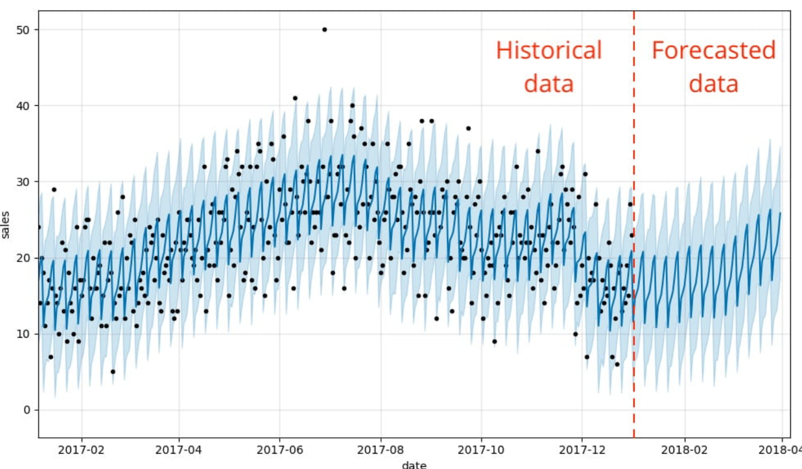

class: center, middle # Presentation Philosophy of Logic and Language <a href='jsmaxim.github.io/Hofweber.pdf'>PDF file</a> --- # Approximation Algorithms for the Routing and Wavelength Assignment problem --- # Prelimenaries ### Econometrics 1. Time series & Regression ### Operations Research 1. Combinatorial Optimization 2. P vs NP --- ## Econometrics: Time series & Regression  --- ## Operations Research : Combinatorial Optimization <img src="knapsack.jpg" style="height:100px; width:100"/> --- ## Operations Research : Combinatorial Optimization --- # Content # 222 ### 1. Introduction 2. Problem Formulation 3. Mathematical background 4. Algorithms 5. Results 6. Conclusion 7. Discussion and Reflection --- # Introduction --- # Problem formulation  --- # Introduction --- find presentation at https://jsmaxim.github.io/#1 made using https://github.com/gnab/remark